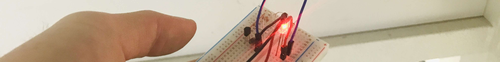

키트 구성품을 확인하고 체크해주세요.
빛이 우리 일상에서 어떤 역할을 하는지 이야기하고, 센서를 이용해 빛을 '감지'하는 기술을 소개합니다.
조도센서와 LED가 포함된 간단한 회로의 원리를 배웁니다.
브레드보드에 회로를 구성하고, 프레임을 조립해 무드등을 완성합니다.
LED를 직접 눈으로 가까이 보지 마세요. 브레드보드 연결 시 핀 방향(+/-)을 확인하세요.
ChatGPT를 활용해 무드등에 넣을 창의적인 메시지나 짧은 스토리를 만들어봅니다.
"초등학생이 잠들기 전에 읽으면 행복해지는 짧은 동화를 3줄로 만들어줘. 별과 달이 나오는 이야기로!" — 구체적인 키워드를 넣을수록 더 좋은 결과물이 나옵니다.
완성된 무드등을 켜고 친구들과 작품을 공유합니다.
ChatGPT는 OpenAI가 만든 대화형 AI입니다. 질문에 답하고, 이야기를 만들고, 아이디어를 브레인스토밍하는 데 사용할 수 있어요. 무드등에 들어갈 감성적인 문구부터 재미있는 동화까지, 원하는 글을 자유롭게 만들어보세요.
ChatGPT 바로가기